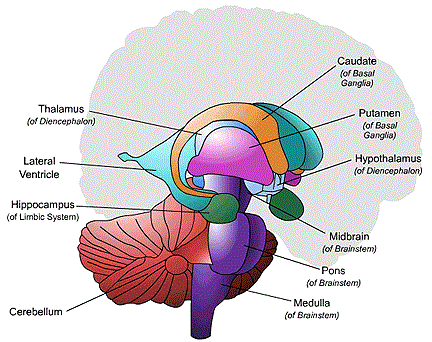
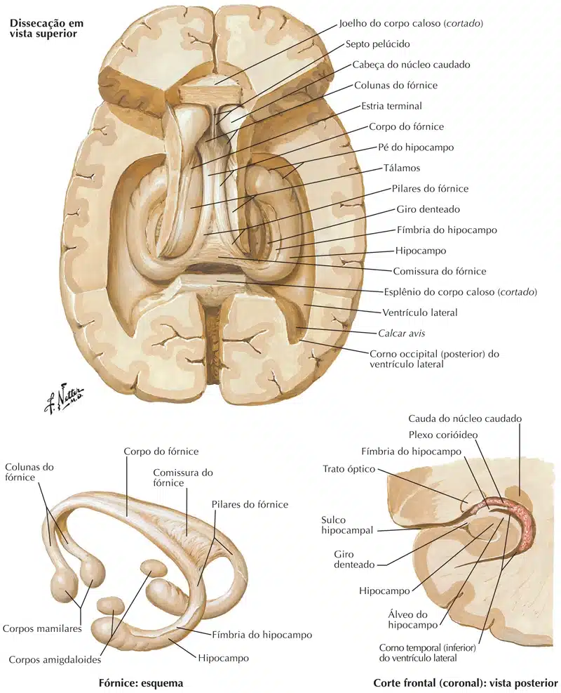
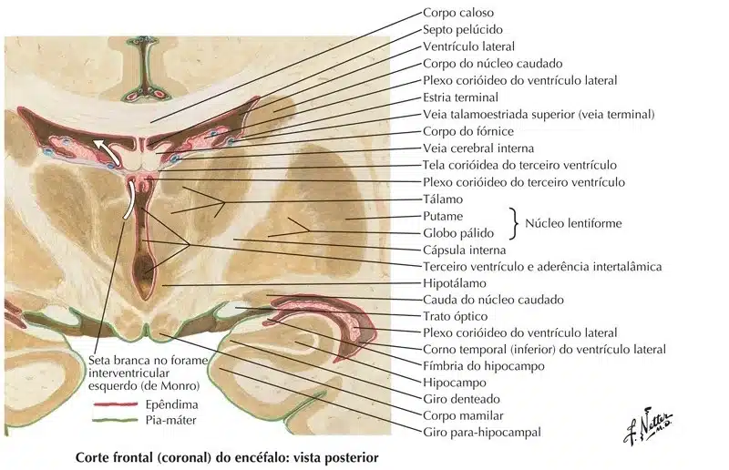
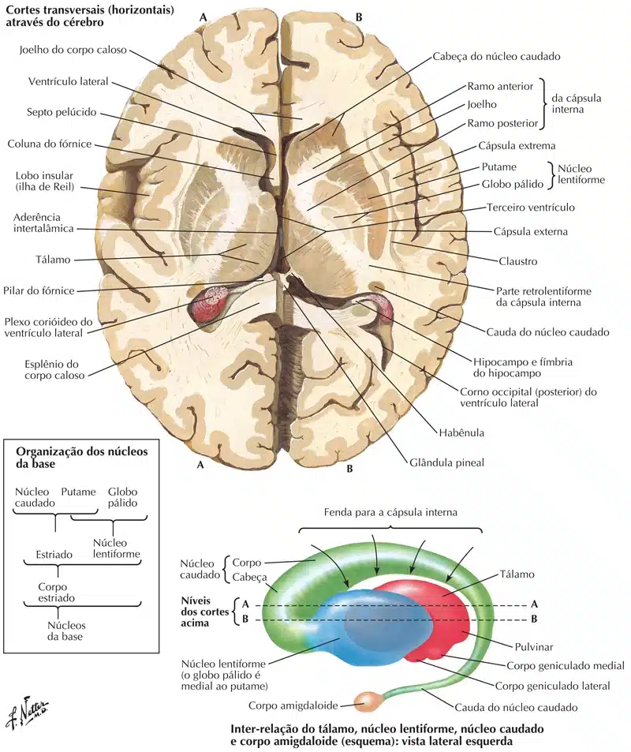

São corpos de neurônios, bem delimitados e com funções específicas, localizados no interior do centro medular branco do cérebro.
Também chamados de gânglios da base.
Estão envolvidos diretamente com o sistema motor, através de uma função moduladora dos movimentos, participando sobremaneira nos processos de planejamento e controle dos movimentos.
É composto por:
Núcleo caudado;
Núcleo lentiforme (dividido em duas porções o globo pálido e o putame);
Claustro;
Corpo amigdalóide;
Núcleo basal (“Meynert”);
E o núcleo acumbens.

Os núcleos caudado e lentiforme formam o corpo estriado (relacionado com o planejamento motor, apresentando conexões com o mesencéfalo e o diencéfalo).
Núcleo caudado: em forma de arco, se relaciona com o ventrículo lateral.
Sua porção anterior é dilatada constituindo a cabeça do núcleo caudado (relaciona-se lateralmente com o ventrículo lateral).
Posteriormente, o núcleo caudado se continua, mais estreito, com o corpo (localizado próximo ao assoalho do ventrículo lateral), terminando em uma porção bastante afilada, denominada de cauda (localizada próxima ao corno temporal do ventrículo lateral).
Núcleo lentiforme: formado medialmente pelo globo pálido e, lateralmente pelo putâmen.
O globo pálido é separado do núcleo caudado e tálamo pela cápsula interna.
Funcionalmente, o corpo estriado é dividido em: estriado (formado pelo núcleo caudado e putame), e o pálido (constituído pelo globo pálido).
A maior parte das fibras parte do estriado para o pálido.
Deste último, partem fibras eferentes do corpo estriado.
Claustro (do latim claustrum – barreira): é uma fina lâmina de substância cinzenta, localizada entre as cápsulas externa e extrema.
Corpo amigdalóide: localiza-se próximo à cauda do núcleo caudado, no lobo temporal.
Tem amplas conexões com o sistema límbico, relacionando-se com o comportamento sexual e agressividade.
Núcleo basal: formado por neurônios colinérgicos, localiza-se anteriormente ao globo pálido.
Conecta-se ao sistema límbico e ao córtex cerebral, apresentando funções correlacionadas com a memória.
Núcleo acumbens: localizado entre a cabeça do núcleo caudado e o putâmen.


